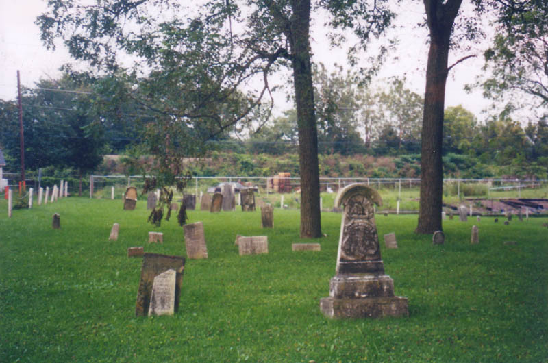
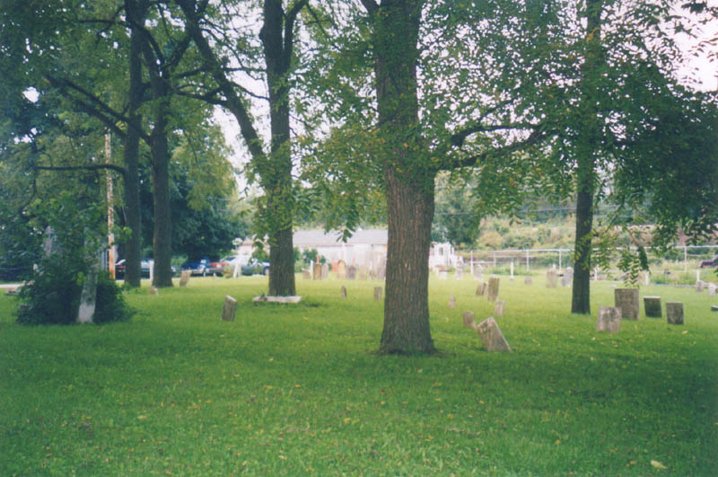
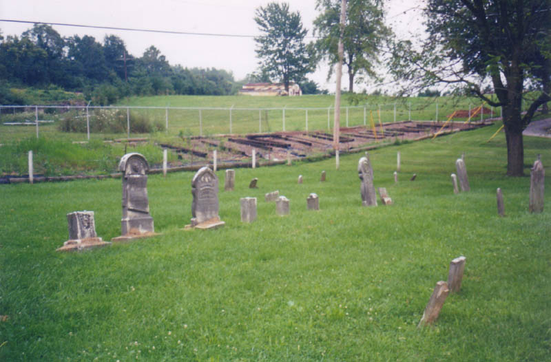
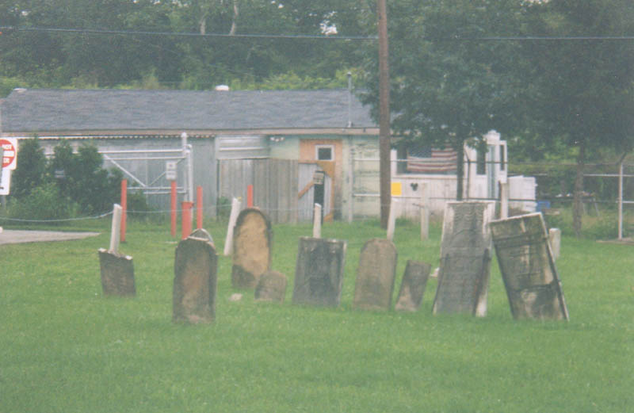
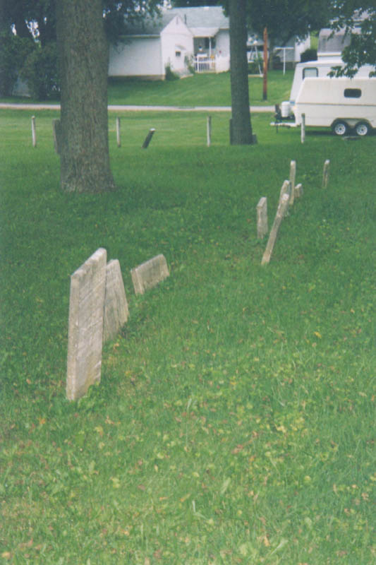

This very old cemetery is the town graveyard for Lockbourne, which is located south of Columbus in Franklin County. It hasn't been used for many decades; today most of the burials in the area take place at the well-kept Fernwood Cemetery just outside of town. Lockbourne Cemetery occupies an acre or two at the end of Landis Street, along the railroad tracks. But the graveyard, like the village of Lockbourne, predates rail travel. The earliest stone is from 1835--the height of the canal era, shortly after Colonel James Kilbourne established the village along the Ohio & Erie Canal.


Lockbourne Cemetery is supposed to be haunted by weird lights and mysterious voices. Katydid and I visited it in the early evening in August 2003, but nothing out of the ordinary happened. Most of the photos on this page are from her camera.

Many of these stones are so old they're completely illegible, and I think it's safe to assume that a number of graves are missing their headstones completely. These are the people who built the canal and the town. I'm not sure which of these people are responsible for the hauntings at Lockbourne Cemetery. If you know more about it, or have experienced anything out of the ordinary there, please send me an e-mail and tell me about it.

Lockbourne Canal Relics
Lockbourne Plague Cemetery
Rootsweb: Old Lockbourne Cemetery
Ohio Canals by Lockbourne, Ohio
Back
forgottenohio@yahoo.com